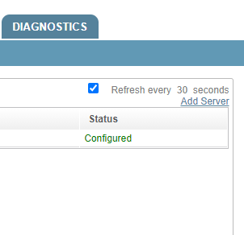
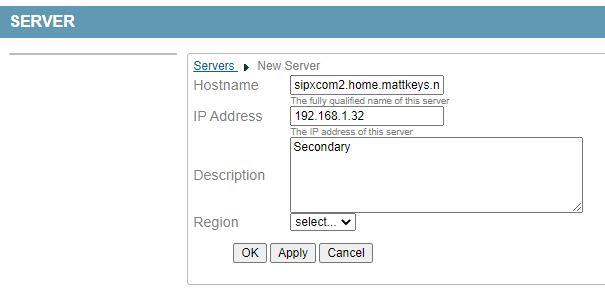
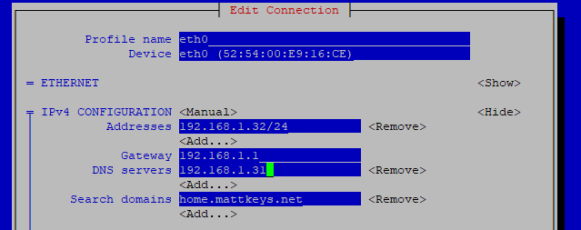
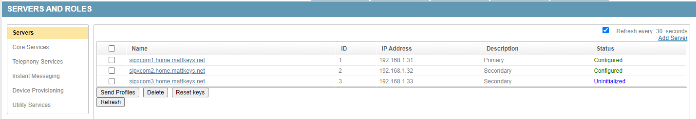
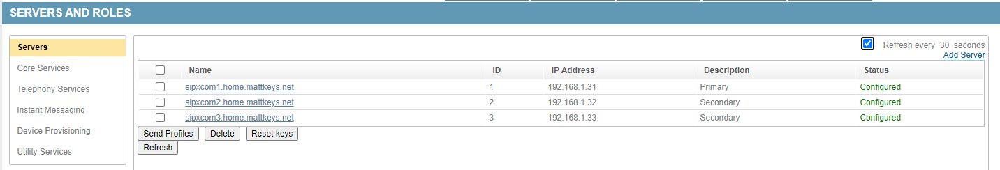
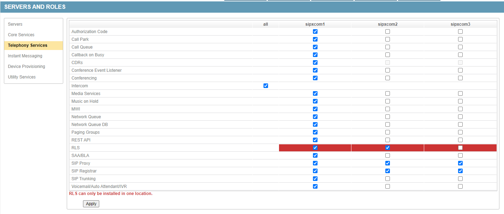

Setup Script¶
Preparation¶
If you haven’t done so already, update the OS packages first and reboot after:
yum update -y
reboot
The script will ask you about the SIP and network domain name to begin with. The server will build a DNS zone and all records required based upon the names inputed.
Warning
Use all lower case as you input hostname, network domain, and SIP domain. DNS records are built based upon your inputs. Any whitespace, extra periods, etc will cause the resulting DNS zone to be invalid. Additionally SIP URIs are case sensitive. For example, sip:MATT@example.org is not the same as sip:matt@example.org or sip:Matt@EXAMPLE.ORG.
If you are using external DNS servers then all records for the zone should exist on the external DNS server.
If you are going to use the internal DNS you should change the server to point to itself for DNS resolution before running the installer script. To do so, use the nmtui utility:
nmtui
Select the interface configuration and set the Primary DNS as the local server IP. Save and quit, then restart the network service:
service network restart
Running the script¶
To begin the installation run:
sipxecs-setup
The script will disable SElinux and reboot automatically. Press any key to initiate the reboot:
Checking SELinux...
Detected SELinux enforcing, setting SELinux to disabled
A reboot is required to apply SELinux changes. Please login as root and run sipxecs-setup after the reboot to continue setup.
Press any key to reboot the system now.
Login as root and run the setup script again:
sipxecs-setup
The first question is if you need to change the network interface configuration. See the Preparation section above regarding the DNS servers. Press y to enter nmtui and make changes, or n to continue on.:
SELinux not set to enforcing
Network settings:
IP address : 192.168.1.31
Would you like to configure your system's network settings? [ enter 'y' or 'n' ] :
The second question is if this is the first server in the cluster. Answer y if it is, n if it is not. Complete the first server before adding secondaries.
Is this the first server in your cluster? [ enter 'y' or 'n' ] :
The third question is the hostname. Press enter if the existing name looks ok.:
Configuring as the first server...
Enter just the host name of this computer?. Example: myhost. [ press enter for 'sipxcom1' ] :
The fourth question is the network domain name. Press enter if the existing name looks ok.:
Enter just the domain name of your network? Example: mydomain.com [ press enter for 'home.mattkeys.net' ] :
The fifth and sixth question is the SIP domain name and realm. This is the domain the DNS SIP SRV records will be built for.:
Tip: Use 'sipxcom1.home.mattkeys.net' as your SIP domain if you are
setting up for the first time or if you know you are only going to setup one
server. This can make configuration easier. You can always change the value
later.
Enter SIP domain name [ press enter for 'home.mattkeys.net' ] :
Enter SIP realm [ press enter for 'home.mattkeys.net' ] :
The seventh and final question asks if you need to make any changes to your input choices. Press n if everything is correct.:
Application settings:
Primary server : yes
Host : sipxcom1
SIP Domain : home.mattkeys.net
Network Domain : home.mattkeys.net
Would you like to change your application settings? [ enter 'y' or 'n' ] :
Adding secondary servers¶
Once the setup is complete on the primary server you can add secondary servers. To do so navigate to Servers.

Click the ‘Add Server’ link at the top-right of the page. Enter the FQDN, IP, and description of the server you are adding.

The sipxcom RPMs should be installed on the secondary just as the primary during the Installation step.
Running the script on the secondary servers is similar to the primary. The script will first disable SElinux. Press any key to reboot:
Checking SELinux...
Detected SELinux enforcing, setting SELinux to disabled
A reboot is required to apply SELinux changes. Please login as root and run sipxecs-setup after the reboot to continue setup.
Press any key to reboot the system now.
Run the sipxecs-setup script again after reboot. The second question is if the network settings are correct:
SELinux not set to enforcing
Network settings:
IP address : 192.168.1.32
Would you like to configure your system's network settings? [ enter 'y' or 'n' ] :
Answer Y and point the server to the primary server IP for the primary DNS server entry.

Save, then answer N when prompted again if you want to make network changes.
The final set of questions:
Is this the first server in your cluster? [ enter 'y' or 'n' ] : n
Configuring as an additional server...
Enter ip address or fully qualified host name of the primary server : 192.168.1.31
Enter the numeric id assigned to this server by the administration server : 2
Application settings:
Primary server : no
Location ID : 2
Master : 192.168.1.31
Would you like to change your application settings? [ enter 'y' or 'n' ] : n
You should see the “Status” field change from “Uninitialized” to “Configured” after this step.

Repeat these steps on additional defined secondaries until all servers are listed as “Configured”.

You may now select services to run on the secondaries. Some services can only run on the primary server.
